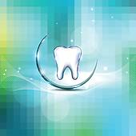
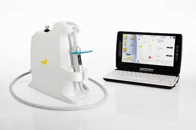
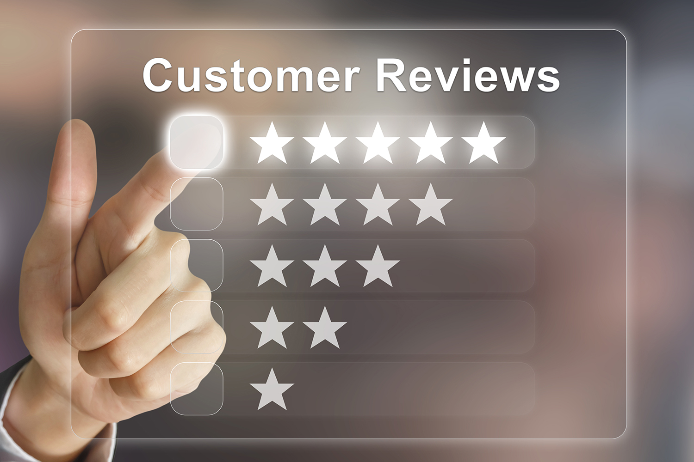

Mission Statement
Our mission at Fine Dental Art is to provide only the highest quality dental restorations delivered in a timely fashion with attentive customer service. We strive to provide the perfect blend of technical expertise, personal service and dependable results. We strongly believe in relationships based on communication and feedback. We take pride in using only the best restorative systems be it Bruxzir, Lava, Zirconia, Tilite, PFM, All-Ceramic, Implants or Temporaries.
Expert techs
As a customer, you have the peace of mind of knowing that your technicians are provided every means necessary to fabricate superior restorations. We provide various kits to suit your dental Laboratory needs. From fit to finish, we endeavor to produce only the finest quality products. They’re guaranteed to raise a smile!
Personalised Support
A technical manager will work closely with you to assistin case planning and product selection. You can depend on their knowledge, technical support and service that makes meeting the demands of your patients a stress free process.
Quality Control

We place stringent quality checks at each point of the fabrication process. This ensures that you receive the highest quality restorations possible. Every final case you receive has an enclosed quality check card to fill in. Please do this as often as you can and simply return with your next job. Your feedback is very important to us.
Dental Technology
Fine dental art continues to invest in the latest technology, equipment and materials in order to provide products more functional and esthetically appealing. With our in-house milling center, we are able to produce a full range of cad/cam restorations with precision fit and perfect esthetics.
Patient Satisfaction
Fine dental art understands that ultimately, we're all working for the patient. We do not cease working on a case until your patient is satisfied.